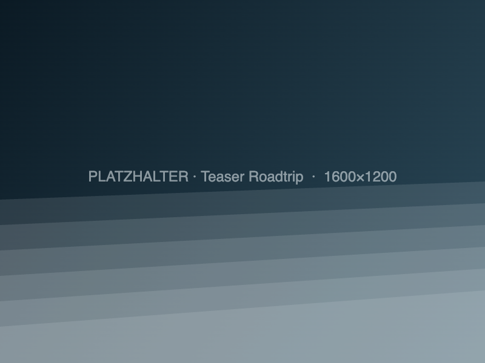
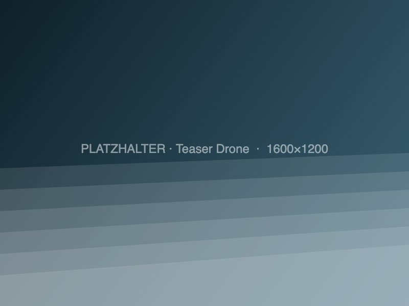

Film 1 · 18:00 min
Roadtrip
Achtzehn Tage der Reihe nach, 167 Einstellungen, unten rechts eine Karte, auf der die Strecke mitwächst. Beginnt still: nur Wind.
Achtzehn Tage im Sommer 2026: zwei Erwachsene, ein Sechsjähriger, ein vollgepackter Kombi mit Dachbox — und ein Land, das sich alle paar Kilometer neu erfindet.
Die Reise hatte ein festes Zuhause und eine lange Schleife. Basis war Skien in der Telemark, bei Freunden. Von dort ging es nach ein paar ruhigen Tagen auf einen zehntägigen Rundkurs quer durch den Westen: Heddal, Geilo, über die Aurlandsfjellet-Passstraße hinunter an den Aurlandsfjord, mit dem Elektroboot durch den Nærøyfjord, zwanzig Kilometer am Stück unter einem Berg hindurch, hinauf nach Geiranger, über die elf Haarnadelkurven des Trollstigen und zurück über die Hochebene von Valdresflye. Danach noch einmal Schärenküste, Angel und Stille — bevor die Fähre wieder Richtung Süden ablegte.
Daraus sind zwei Filme geworden, die absichtlich nicht dasselbe erzählen. Der Roadtrip läuft chronologisch über alle achtzehn Tage, mit mitlaufender Karte und Etappenangaben — er ist die Reise. Der Drone Edit hat keine Karte, keinen Text und keine Chronologie im Kopf: nur lange Einstellungen von oben, zwei Musikstücke, neuneinhalb Minuten Luft — er ist die Landschaft.

Film 1 · 18:00 min
Achtzehn Tage der Reihe nach, 167 Einstellungen, unten rechts eine Karte, auf der die Strecke mitwächst. Beginnt still: nur Wind.

Film 2 · 9:28 min
78 Aufnahmen aus der Luft, ohne Text, ohne Karte. Die erste Reise mit der Drohne — und ein Tag, an dem sie unten blieb.